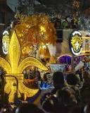
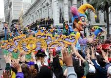
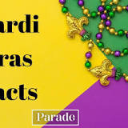
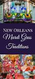

Details about the Mardi Gras event Parades, King Cake Festival,
Carnivals balls and extravaganzas, Lundi Gras and so much more than
just Fat Tuesday, Mardi Gras is a whole Carnival season of fun.

MARDI GRAS IS ALWAYS THE TUESDAY BEFORE ASH WEDNESDAY.
MARDI GRAS MARKS THE END OF CARNIVAL SEASON.
MARDI GRAS IS ALSO KNOWN AS "PANCAKE DAY"
THE OFFICIAL COLORS OF MARDI GRAS ARE PURPLE, GOLD, AND GREEN
Purple signifies justice, gold means power, and green stands for
faith.

"Mardi Gras" translates directly to "Fat Tuesday."
Mardi Gras is the final day of carnival celebrations before
Ash Wednesday, the beginning of Lent.
Most carnival celebrations last three days to a week.
Christian carnival celebrations typically kick off on the
Epiphany or the Twelfth Night.

mardi Gras Beads & Throws
Probably one of the most well known Mardi Gras traditions. The
beads, or “throws” as we call them, having been passed out since
the 1920s when Rex and a few other krewes began handing out tiny
trinkets to the parade followers. The original Mardi Gras beads
were made from glass

Go to a parade. When it comes to celebrating Mardi Gras, Dean
says it's all about going to the parades. ...